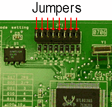

Formatting Access 2 AU Hard Drive
This procedure describes how to format the Access 2 analytical unit hard drive and install the software required to operate the AU.
Tools required to format and program the Access 2 analytical unit (AU) hard drive:
- Access 2 Service Disk Kit 973141
- Access 2 Software CD (Confirm that the CD version matches the installed version)
- PS/2 to AT Keyboard Adapter (973086 - included with every Customer Care Kit) or a spare keyboard with an AT connector
- Field Service Disk Kit (the new kit that includes the updated driver for a new style network PCB, if the new network card has been installed)
This procedure is for the Access 2. Format the hard drive only when all other troubleshooting efforts have been exhausted. Formatting the AU HDD should be a last resort.
Perform this procedure only when you have confirmed that the instrument hard drive requires reformatting.
Items that can contribute to the appearance of a defective AU hard drive:
- A defective CPU PCB.
- A defective hard drive power cable or connector.
- A defective or reversed hard drive ribbon cable.
- No 5-V DC power to the hard drive.
- HDD controller failure message on the AU during bootup - can be a CPU, a ribbon cable, or an HDD power harness.
- Instrument does not initialize - can be a defective PCB or a physical jam.
Note: Using the Access 2 software CD to load software into a new or newly formatted instrument hard drive, erases the I/O PCB alignments and creates an incorrect IP address for the AU in the PC database.
-
Make the keyboard and monitor connections to the AU to execute and view the commands for formatting the hard drive.
Note:
- Unless noted, commands are not case-sensitive.
- Be sure to follow correct ESD safety to prevent damage to sensitive hardware.
- Obtain an alignment report for the instrument being serviced, or print a new copy, if possible.
-
Exit the user interface on the PC that is assigned to the instrument being serviced.
Note: To exit the user interface, from the Main Menu press [Alt] + [F4] and then enter the password Access2Support (case-sensitive).
- Power off the instrument.
- Disconnect the keyboard and video cables from the back of the PC that is assigned to the instrument being serviced.
-
Connect the monitor video cable to the VGA port on the instrument. Connect the keyboard cable (with adapter) to the AT keyboard port on the instrument.
Note:
- Connecting the keyboard directly to the PS/2 connector on the CPU PCB may not allow access to the CMOS setup in all cases.
- A PS/2 to AT adapter is included in the Customer Care Kit.
-
Create the new hard drive partition.
-
Insert the floppy disk into the AU floppy drive, and power on or reboot the AU.
- Access 2 Master Boot 1 Disk: Older version.
- Access 2 Install Disk II: Newer version.
Note:- It takes a few minutes to boot. When done, the OS9000 $ prompt is displayed.
- If the keyboard is not installed in the instrument, then the instrument does not boot to the $ prompt.
- At the $ prompt, type fdisk -e -d=/hc1fmt -i, and then press [Enter] to display the fdisk menu.
- In the fdisk main menu, select [1] (create the OS9000 partition) and press [Enter].
- To accept the default partition size, press [Enter].
- In the selection list, enter [1] for partition type OS9000/386, and then press [Enter].
- After creating the partition, press [Esc] to return to the fdisk main menu.
-
Insert the floppy disk into the AU floppy drive, and power on or reboot the AU.
-
Make the new hard drive partition active.
- In the fdisk menu, select [2] to set active partition, and then press [Enter].
- In the submenu, select Partition [1] and press [Enter] so that partition 1 displays status A, Type OS9000.
- Press [Esc].
- In the fdisk menu, select [6] to write the Master Boot Record to disk, and then press [Enter].
- Select [Y] at the prompt do you want to create MBR. and then press [Enter].
- After the MBR created message is displayed, press [Esc].
- In the fdisk menu, press [Esc] to exit fdisk, select [Y] to save partition information, and then when prompted press [Enter] to return to the OS9000 $ prompt.
-
Format the hard drive partition.
-
At the OS9000
$ prompt, type
format -r -np -nv -v=Access2 /hc1fmt and press
[Enter].
Note: To cancel the process, press [Ctrl] + [x].
- The format progress is displayed. When the format is complete, the OS9000 $ prompt is displayed.
-
At the OS9000
$ prompt, type
chd /hc1fmt and press
[Enter].
Note: A return to an OS9000 $ prompt, indicates that there are no errors (hc1fmt is the instrument hard drive).
- If errors occur, then repeat the fdisk process, troubleshoot the hardware, or replace the hard drive.
-
At the OS9000
$ prompt, type
format -r -np -nv -v=Access2 /hc1fmt and press
[Enter].
-
Extract the AU hard drive boot files.
-
Identify the Network Interface Card (NIC) installed in the instrument. The newer NIC has jumpers.
If a newer style NIC is in the system, then use the A59578 Access 2 Install Disk II in the next step.

-
Place the Access 2 Master Boot 2 Install Disk (Access2 Install Disk II) into the AU floppy drive.
- Access 2 Master Boot 2 Install Disk: Older version, has drivers for older NIC.
- Access 2 Install Disk II: Newer version, has drivers for newer NIC.
Note: Do not reboot. The AU should remain booted from the Access 2 Master Boot 1 Disk. - At the OS9000 $ prompt, type chd /dØ and press [Enter] to access the instrument floppy drive dØ.
-
At the
$ prompt, type
genit.sh and press
[Enter].
Note: This operation creates the /hc1fmt/sys directory and startup files on the AU hard drive. The operation takes about a minute and returns to the $ prompt when complete. If there is an error, check that the correct disk (Access 2 Master Boot 2 Install Disk or Access 2 Install Disk II) is installed, and then repeat the command.
-
Identify the Network Interface Card (NIC) installed in the instrument. The newer NIC has jumpers.
-
Start a CMD session to confirm communications from the PC to the AU.
-
Connect the keyboard and monitor to the PC.
Note: The PC motherboard video is disabled. Connect the video cable to the PC video card connector.
- At the NT desktop, select Start > Run.
- On the Run text line, type cmd and press [Enter] or select OK.
- At the C:> prompt in the cmd window, type ping 192.168.2.2 and press [Enter].
-
If the AU does not reply as expected, then:
- Check that the address is typed correctly.
- Check the network connections.
- Reboot the AU with the Master Boot Disk 1 installed in the AU.
- Ping again.
Note: The AU should reply at 2.2, the IP address of an unprogrammed AU. If there is no connection LED illuminated on the network hub port for the AU connection, then load the NIC driver. Refer to the Updating NIC Driver procedure.
-
Connect the keyboard and monitor to the PC.
-
Communicate by file transfer protocol (ftp) to the AU, and send the AU operating files to the AU hard drive.
Note: The nexstepdebugos9.tar file is not on the PC until after the Access 2 software is loaded. The file is not on a new or MFG cleaned-up PC. If the file is not on the PC, then copy it from the Access 2 software CD.
- In the cmd window at the C:> prompt, type ftp and press [Enter].
- At the ftp> prompt, type open 192.168.2.2 and press [Enter].
-
At the
ftp> prompt, type
super and press
[Enter], then type
user and press
[Enter].
Note: The word user is invisible when typed.
-
At the
ftp> prompt, type
bin and press
[Enter].
Note: The system responds, type set to i.
-
At the
ftp> prompt, type
prompt and press
[Enter].
Note: The system responds, interactive mode off.
- At the ftp> prompt, type cd /hc1fmt and press [Enter].
-
At the
ftp> prompt, type:
- mput c:\nexstep\instrument\tar and press [Enter].
- mput c:\nexstep\instrument\diskcache and press [Enter].
- mput c:\nexstep\instrument\mw86sm.tar and press [Enter].
- mput c:\nexstep\instrument\NexStepDebugOs9.tar and press [Enter].
Note:- The .tar files are large and can take 30 seconds to send. Sending ends with the ftp> prompt.
- If there is an error, then the path to the file may have been typed incorrectly.
- If the files do not seem to be on the PC, then use Windows NT Explorer to confirm that the files are missing. If the files are not found on the PC, then input them from the Access 2 software CD.
-
Transfer the startup file from the PC to the AU hard drive.
The startup file is saved on the PC when the software is loaded, and the file contains the AU IP address.
- In the CMD window at the ftp> prompt, type cd /hc1fmt/sys and press [Enter].
-
At the
ftp> prompt, type
ascii and press
[Enter].
Note: The system responds with type set to a.
-
At the
ftp> prompt, type
mput c:\nexstep\pc\drw\os9000\startup and press
[Enter].
Note:
- If there is a ? prompt, press [Enter] to overwrite the existing file.
- The startup file contains the AU IP address and the file size is about 4 KB.
- The address will not take effect until after the AU is rebooted.
- The startup file is not on a new or cleaned (using MFG Cleanup) PC. If the file is not on the PC, then skip this step.
- Close the cmd window.
-
Telnet to the AU and extract the AU operating files on the AU hard drive.
- At the NT desktop, select Start > Run.
- In the Run field, type telnet 192.168.2.2 and press [Enter] or select OK to open a Telnet window.
- At the log-on prompt, type super user and press [Enter].
- At the super prompt, type chd /hc1fmt and press [Enter].
-
At the
super prompt, type:
- load -d tar diskcache and press [Enter].
- diskcache -e /hc1fmt=1024k and press [Enter].
- tmode nopause and press [Enter].
-
At the prompt, type
tar xvpf mw86sm.tar and press
[Enter].
Note: Files are created ending with a prompt.
-
At the prompt, type
tar xvpf nexstepdebugos9.tar and press
[Enter].
Note: Files are created ending with a prompt.
- Close the telnet window.
-
Restore the nvsetup file alignments.
-
Remove any disk remaining in the AU floppy drive, and then reboot the AU.
Note: Do not reboot the PC now. If the PC is rebooted, do not enter a serial number if prompted. Entering a serial number causes erasure of the instrument I/O PCB alignments. Use the task manager to exit the NexStep application serial number entry.
- In the Windows NT desktop, select Start > Run.
-
In the Run field, type
telnet 192.168.2.4 and press
[Enter] or select
OK to open a Telnet window.
Note: The IP address is identified in the startup file (normally 192.168.2.4 server or 2.6 client).
- At the log-on prompt, type super user and press [Enter].
- At the (super) [/hØ/>] prompt, type cd /hØ/nexstep/scriptutil and press [Enter].
-
At the
(super) [/hØ/nexstep/scriptutil/>] prompt, type
ram2disk.sh and press
[Enter] to save the I/O PCB nvram into the nvsetup.csv file on the hard drive.
Note:
- If an error occurs, check the typing, confirm the instrument has been rebooted, and repeat restoring the nvsetup file alignments.
- If the I/O PCB does not have alignments (new PCB), then run a CMD window ftp session, open a connection to the AU, set the file type to ascii, cd to /h0/nexstep/drw, and mput the alignments from c:\nexstep\pc\backup\drw\os9000\nvsetup.csv. In scriptutil, type nvinit.sh -d.
- Close the telnet window.
-
Remove any disk remaining in the AU floppy drive, and then reboot the AU.
-
Reboot the instrument, initialize the system, and verify system performance.
-
Reboot the PC to restart the user interface.
Note:
- In workgroups, always start the server PC first.
- If there is a network communication error while launching the user interface, then troubleshoot the network.
- If the PC is new or has been cleaned using MFG Cleanup, load the Access 2 software now.
-
Allow the user interface to progress to Ready or Not Ready, then select
Diagnostics > Initialize System.
Note:
- If Not Ready, then review the Event Log and troubleshoot accordingly.
- It may be necessary to home the RV shuttle, the incubator belt, and the wash carousel before initializing.
- The most common cause for a communication problem at this point, is failure to perform step 6 of the Extract the AU Operating Files step.
-
Verify that the alignments values and the LED target value match the values listed in the latest alignment report.
Note: If the PC is new or has been cleaned using MFG Cleanup, then now is a good time to restore from backup.
-
Change the RV waste bag, load RVs, and load new substrate.
Note: If the alignments are all zero, then restore the alignments. Refer to the Modifying Access 2 AU NVRAM (Run Time)procedure.
-
Perform QC on each on-board punctured reagent pack to verify system operation.
Note: Formatting or replacing the AU hard drive does not affect calibrations.
-
Reboot the PC to restart the user interface.